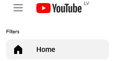
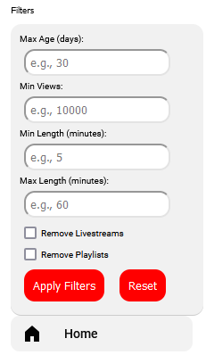
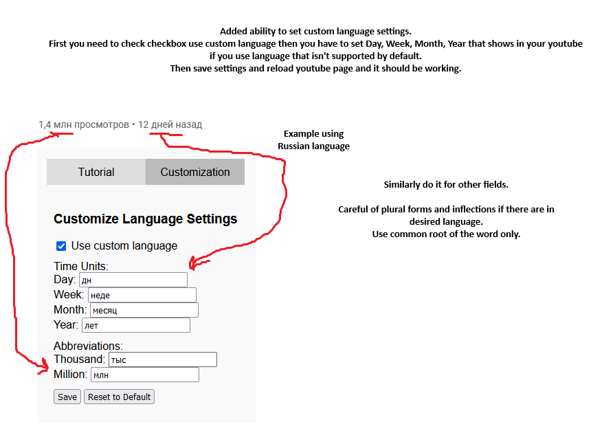

Customize Language Settings
Day:
Week:
Month:
Year:
Thousand:
Million:
Navigate to YouTube where you'll find the new filter options in the sidebar.

Click on the "Filters" button to open the filter bar. Set your desired filters and click "Apply Filters" to see the changes.

If you want to reset the filters, click the "Reset" button to restore the original view.
Added ability to set custom language settings for different language YT users, users will need to set up values for custom language to work

If you have any questions, feel free to reach out!
Check where to apply saved filters
Some views wont use filter field "age", because if videos already ordered by age like in subscribtion tab and channel view, filter will keep removing all videos and loading new ones